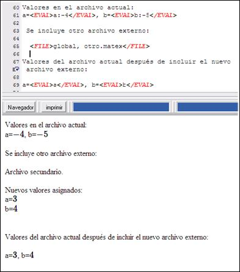

Uso:
<FILE> nombre_archivo_incluir.matex </FILE>
<FILE> global, nombre_archivo_incluir.matex </FILE>
Permite incluir y procesar otro documento .matex en el documento actual. El resultado de procesar el nuevo archivo se añade al codigo generado por el documento actual.
Si se incluye la palabra clave global antes del nombre del archivo, este se procesará en una nueva sesión máxima independiente de la actual, por lo que las variables definidas en el documento inicial no serán visibles desde el nuevo documento.
Ejemplos:
<FILE> otroarchivo.matex </FILE>

Atajo: CONTROL + F
Información adicional:
Debe tenerse cuidado con la utilización recursiva de esta etiqueta. Si dos documentos incluyen cada uno al otro, se producirá un bucle infinito.
Created with the Personal Edition of HelpNDoc: iPhone web sites made easy